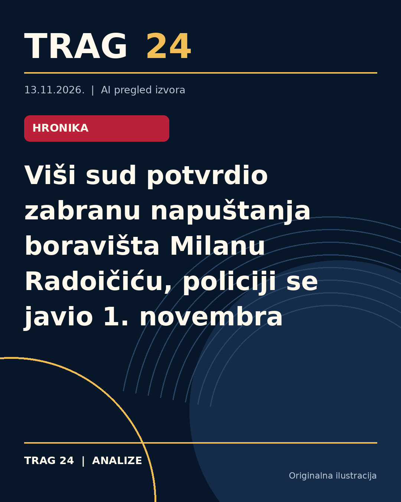

Viši sud potvrdio zabranu napuštanja boravišta Milanu Radoičiću, policiji se javio 1. novembra

ŠTA SE DOGODILO
Milan Radoičić, okrivljeni u predmetu povezanim sa događajima u Banjskoj, i dalje ima zabranu da napušta svoje mesto boravišta i teritoriju Srbije bez odobrenja Višeg suda u Beogradu. Takođe je obavezan da se uredno javlja policiji dva puta mesečno, poslednji put 1. novembra 2026. godine. Ova mera je deo postupka zbog optužbi da je nabavljao i skladištio oružje, što je povezano sa oružanim sukobom u Banjskoj.
HRONOLOGIJA
Od januara 2023. do 24. septembra iste godine, Radoičiću se stavlja na teret nabavka oružja, municije i eksploziva iz Tuzle, Federacija BiH, i njegovo skladištenje na teritoriji AP Kosovo i Metohija. Nakon oružanog sukoba u Banjskoj koji se dogodio u septembru 2023., a u kojem je stradalo nekoliko ljudi, Tužilaštvo Kosova podiglo je optužnicu protiv 45 osumnjičenih, među kojima je Radoičić označen kao vođa grupe. Prema rešenju Višeg suda od 30. septembra 2026., i dalje mu je produžena mera zabrane napuštanja boravišta do pravnosnažnosti presude. U to vreme on se nalazio u statusu potpredsednika Srpske liste, sa koje je podneo ostavku nakon sukoba.
ŠTA NAVODE IZVORI
Viši sud je potvrđen u izjavi da Radoičiću nije dozvoljeno da napušta Srbiju niti teritoriju AP Kosovo i Metohije bez sudskog odobrenja, te da je policijsku stanicu Savski venac poslednji put posetio 1. novembra 2026. Milan Zvezdanović, bivši inspektor Bezbednosno-informativne agencije, naveo je za N1 nezvanične informacije da je Radoičić mogao napustiti Srbiju, navodeći Rusiju kao destinaciju, ali sudska mera je i dalje na snazi. Izvori navode i da je Radoičiću privremeno oduzet pasoš Republike Srbije.
ŠTA JE POTVRĐENO
Potvrđeno je da Radoičiću traje mera zabrane napuštanja boravišta i teritorije Srbije bez odobrenja suda. Policija je registrovala njegov dolazak 1. novembra 2026. godine. Sudska mera je produžena rešenjem od 30. septembra 2026. i važi do pravnosnažnosti presude ili eventualnog izdržavanja kazne. Takođe je potvrđeno da je on preuzeo odgovornost pred institucijama Srbije, ali se proces na Kosovu nije pokrenuo uprkos njegovom označavanju kao vođe grupe u tom postupku.
ŠTA NIJE POTVRĐENO
Nije potvrđeno da je Milan Radoičić napustio teritoriju Srbije. Informacije o njegovom mogućem odlasku u Rusiju dolaze iz nezvaničnih izvora i nisu potvrđene od strane nadležnih institucija. Takođe nema potvrde da je dobio odobrenje Višeg suda za napuštanje boravišta ili Srbije.
ŠTA OSTАJE OTVORENO: Ostaje otvoreno pitanje da li je Milan Radoičić tražio ili eventualno dobio dozvolu Višeg suda da napusti mesto boravišta ili zemlju, kao i detalji o planovima njegovog eventualnog putovanja i razlozima za isti. Takođe nije poznato da li će se na Kosovu pokrenuti bilo kakav proces protiv njega i kakav će biti dalji tok sudskog postupka u Srbiji.
Izvori
- https://nova.rs/vesti/hronika/visi-sud-radoicic-ne-sme-da-napusta-boraviste-bez-odobrenja-u-ps-se-poslednji-put-javio-1-novembra/
- https://www.danas.rs/vesti/drustvo/visi-sud-milan-radoicic-policija/
- https://n1info.rs/vesti/visi-sud-radoicic-ne-sme-da-napusta-boraviste-bez-odobrenja/
Ova analiza je pripremljena uz pomoć veštačke inteligencije na osnovu javno dostupnih izvora. Navodi izvora nisu nužno nezavisno potvrđeni.